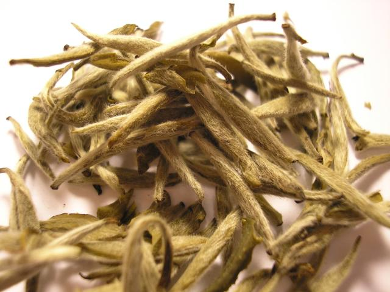

| Origen | Oxidación | Sabor | Cafeína | Beneficios |
|---|---|---|---|---|
| China (principalmente Fujian) | Muy baja (procesado mínimamente) | Suave, floral, dulce, a veces afrutado | Baja | Alto en antioxidantes. Bueno para la piel y el sistema inmunológico. Propiedades antienvejecimiento |